HAM FAIR 2004
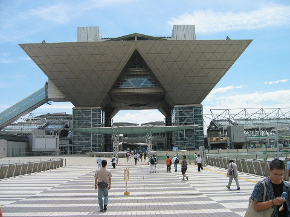
2004年 アマチュア無線フェスティバル in 東京有明
|
◎ Ham Fair 2004 開催 「ハムフェア2004」が8月21日(土)、22日(日)の両日、東京有明の東京ビッグサイト・西2ホールで開催された。 開催日程が週末の土、日曜日の2日間に短縮されて3年目となる今年の来場者は、JARLの発表によるとのべ27,000人だった。 日程の短縮で、各種ミーティングは土曜日に集中するため、主催者側や参加者は"人集め"や"参加ミーティングのやりくり"に苦労していたが、 今年はJARL主催の「アイボールQSOパーティー」と"集客力"の多い「JAPAN DX Meeting」が合同開催する事になり、懇親会の会場は久しぶりに大賑わいとなった。 |
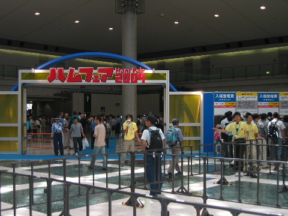
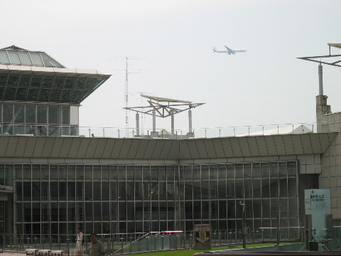
会場入り口(21日)/西ホール屋上に上がった特別記念局・8J1Aのアンテナ群
Event corner
◎ ハムフェア2004イベントコーナー・プログラム 21(土) 11:00 D-STARの使い方と楽しみ方(7L1FFN/JO2MLC) 12:00 南極ドームふじ 8J1RF局運用報告(第44次日本南極地域観測越冬隊員・JA0WJN) 13:00 Amateur Radio in Scandinavian Countries(LA2RR) 14:00 JAIAタイム・アマチュア無線局のインターネット・コントロール 15:00 表彰式・自作品コンテスト、絵画コンテスト(総務省/JARL) 22(日) 11:00 アマチュア無線のデジタルネットワークから見たD-STAR(7M3TJZ) 12:00 3B9C ロドリゲス島DXペディション報告(FSDXA・JA1RJU) 13:00 ARRLアワードガイダンス(ARRL・NC1L) 14:00 JAIAタイム・アンテナアナライザー大研究2004(クラニシ) 15:00 表彰式・関東UHFコンテスト(JARL関東地方本部) |
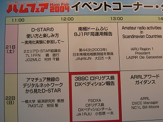
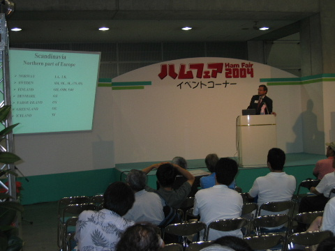
イベントコーナーで講演するIARU第1地域会長、LA2RR・Ole Garpestad氏
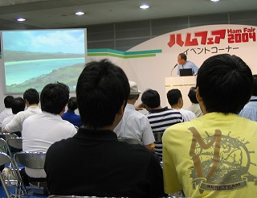
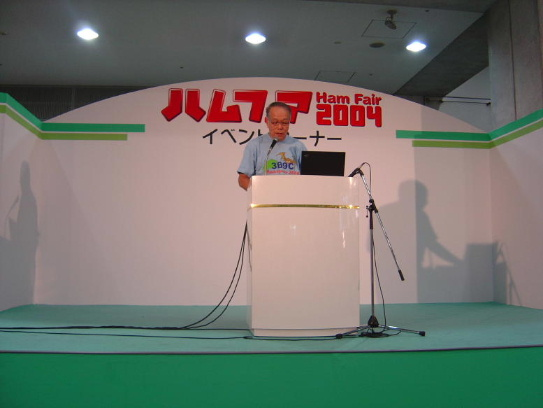
FSDXAの3B9C・ロドリゲス島DXペディションの報告はJA1RJUから
JAIA & ビジネスコーナー
| バーテックスタンダードのブースでは今年も"インターネットを利用した新しいアマチュア無線、WIRES (ワイアーズ)のデモンストレーションと、 冒険家・Captain TAKANO氏による「Mission the Nile」と題した"ナイルに生きる人々との心に触れる出会いの旅"の報告会が行われていた。 |

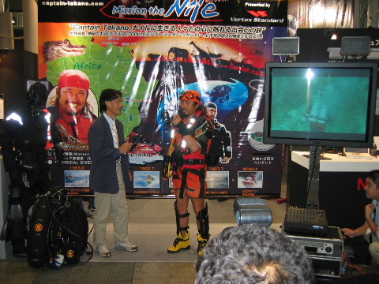
盛りだくさんの催しもので賑わっていたバーテックスタンダードのブース
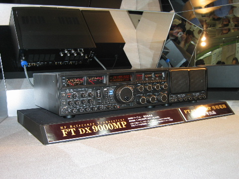

バーテック・スタンダード(YAESU)は、12月に発売を予定している注目のFTdx 9000を展示
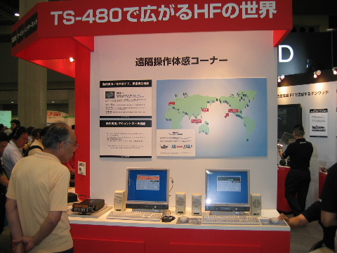
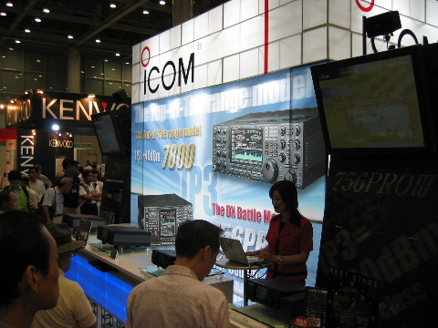
KENWOODは遠隔操作のTS-480、I-COMはIC-7800とIC-756MKⅢが目玉！
8J1A
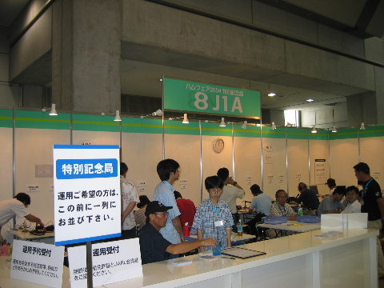
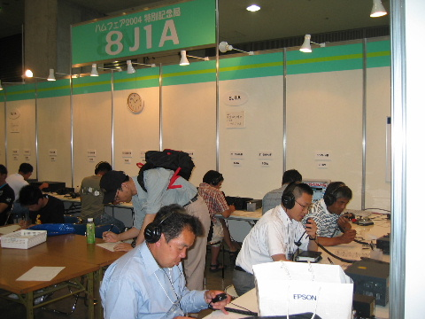
ハムフェア記念局・今年のコールサインは8J1A
| 恒例となっているDXCCのフィールドチェックはARRLからDXCC Branch ManagerのNC1L・Bill Moore氏が来日、 JARLのフィールドチェッカーを補佐した。 |

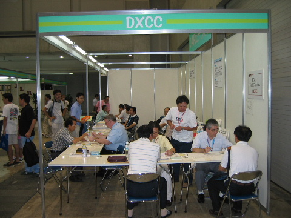
ハムフェア会場で行なわれたDXCCフィールドチェック
Ham Fair 2004
Ham Fair 2003
Ham Fair 2002
Ham Fair 2001
Ham Fair 2000
Ham Fair 1999